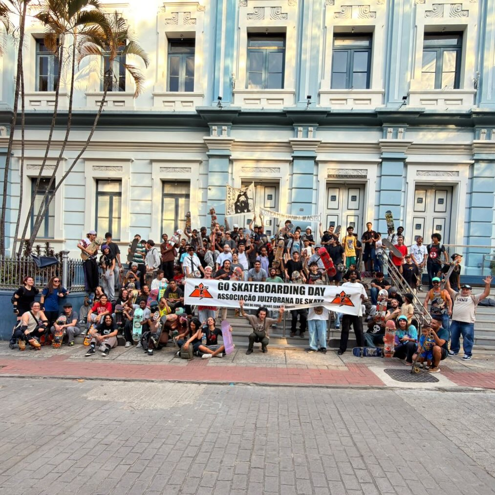

01
Campeonatos e eventos
Organização de campeonatos, torneios e demonstrações de skate na cidade e na região, incluindo o circuito juizforano.

Desde 1999 a AJS luta por pistas, políticas públicas e reconhecimento do skate em Juiz de Fora e região, organizando campeonatos, projetos sociais e o rolê que junta a cidade inteira.
A Associação Juizforana de Skate é uma sociedade civil sem fins lucrativos que tem como área de atuação Juiz de Fora e região. Nossa finalidade é incentivar, divulgar e promover a prática do skate, desenvolvendo atividades esportivas, sociais, culturais, recreativas e beneficentes que resultem no bem-estar da comunidade.
Nascemos da necessidade concreta de ter onde andar, e seguimos na luta por melhores condições nas pistas e pelo reconhecimento do esporte junto à sociedade juizforana.
Organização de campeonatos, torneios e demonstrações de skate na cidade e na região, incluindo o circuito juizforano.
O programa Bom de Escola, Skate Rola e oficinas em comunidades, usando o skate como ferramenta de educação e inclusão.
Representamos os associados junto ao poder público e defendemos os direitos protegidos pelo Estatuto da Criança e do Adolescente.
Trabalho conjunto com entidades da sociedade civil, lojas, empresas e marcas idôneas de skate, sempre em prol do esporte.
Clique em um skatista para ver a descrição e os vídeos dele.
Datas, locais, categorias e inscrições das etapas organizadas pela AJS.
Matérias sobre a associação, a cena juizforana e a cultura do skate.